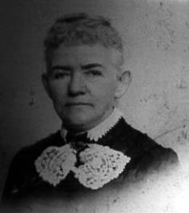

"This is another picture of 'Mama Dowd' [Lydia Josephine Bruce PERSON DOWD] The date on the back is 1901 and the studio was in New York City. Having been born in 1832, this would make her around 69 years old when this picture was taken" - inscription by William David Snyder.
Last updated on 26 Oct 1998